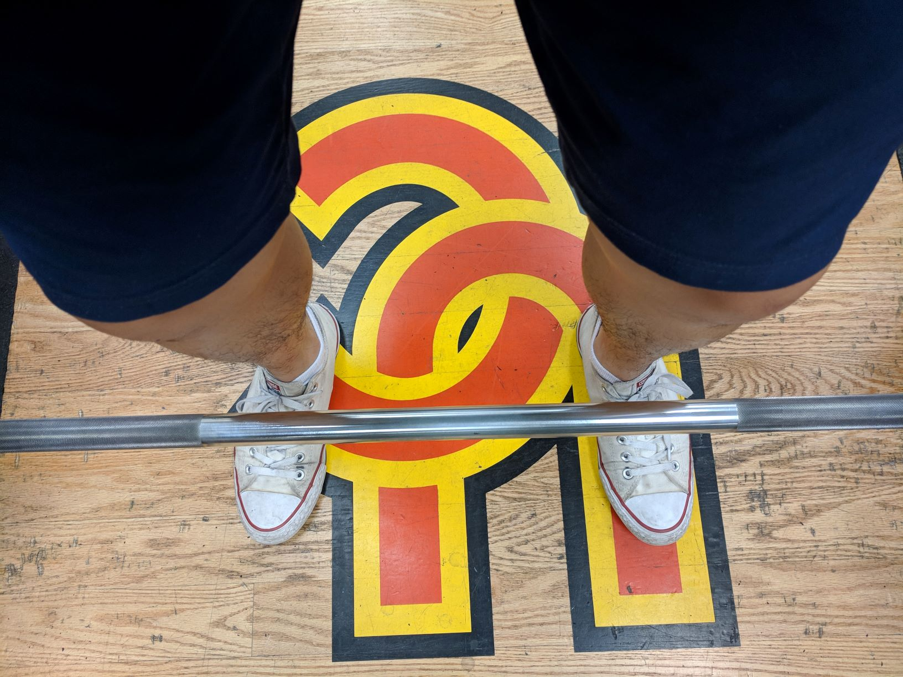
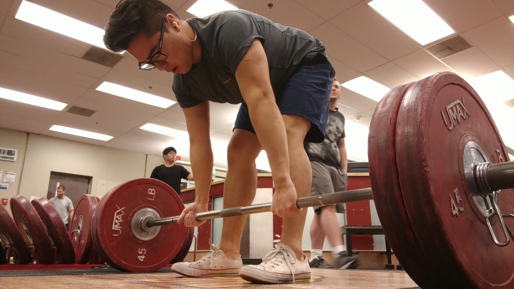
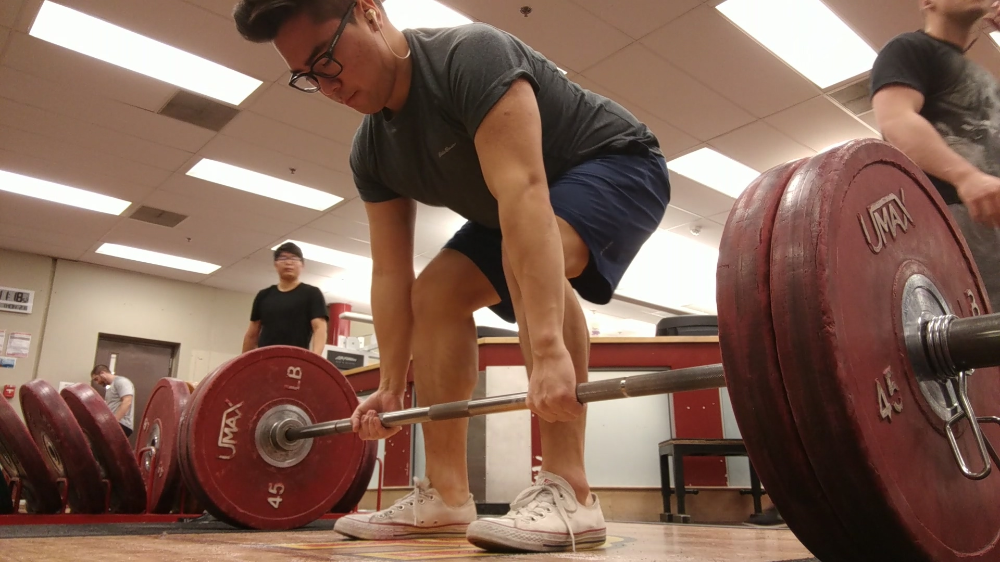
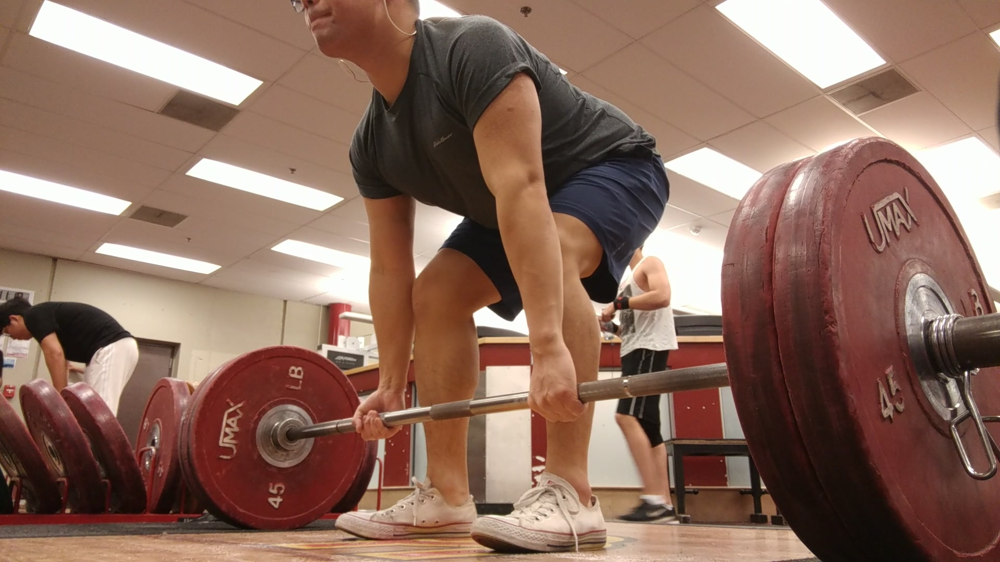
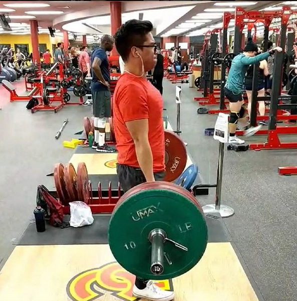

You may be asking yourself "why should I bother with deadlifting?", "I heard you can break your spine so is it even worth it?",
"Isn't it dangerous?", "All the people deadlifting are so loud and obnoxious what's the point?". I'll tell you why, because the
deadlift is the BEST lift. The deadlift hits your ABS, your HAMSTRINGS, your QUADS, FOREARMS, TRAPS, LATS, OBLIQUES, GLUTES, and
trains your GRIP! No other lift trains so many muscles all at once! Not convinced? You should deadlift because its MANLY. Or WOMANLY.
The deadlift does NOT discriminate! There is no truer RAW DISPLAY OF STRENGTH like the deadlift. There is no cheating, no half reps, no bells and whistles.
The deadlift is the most functional of all lifts; simply how much weight can you pick up off the ground?
Below are the steps I was taught to deadlift. As a brief disclaimer, everyone has different body types and thus different methods may work better for you.
This is simply how I personally deadlift.

Step 1: Feet
Approach the barbell so that the bar passes over the middle of your entire foot. For me, this is right over where the arch in my foot is or roughly 1 inch away from your shins.
The width of stance can vary but I imagine I'm about to take a big jump from a stand still - The width of my feet in this position is the width I find most comfortable, roughly shoulder width apart.
Once in this position, do not move the barbell
Step 2: Gripping the Bar
Bend over and grab the bar
Your hands should be just outside of your legs
Do not move the barbell. Doing so may change the position of your feet relative to the bar


Step 3: Hips
Drop your hips and bend your knees until your shins hit the barbell
Do not pull the barbell to your shins
Step 4: Neutral Back
Push your chest out but make sure not to move your hips. This will ensure that your back is no longer rounded.
A round back during a deadlift can lead to sever injury
This step also helps to straighten your arms out
Again, Do not move the barbell.


Step 5: Lift - Drag the Barbell Up Your Body
Take a deep breath, hold it in, and brace your core. Your core is what will support your back and prevent it from rounding
Imagine pushing your feet through the floor. You want to engage your legs, specifically your hamstrings, first.
Pull the 'slack' out of the bar. What this means is instead of jerking upwards, if you are lifting 200lbs, pull with 199lbs of force before leaving the ground.
Push with your legs until the moment the bar passes your knees
Now push your hips forward as you straighten your legs
Finish with your chest out, your knees locked, and your glutes flexed. Stand tall and proud like the BADASS you are.
Exhale!
Step 6: Finish STRONG!
Just because you're at the top doesn't mean you can relax
Keep your core flexed/engaged
Push your hips back then bend your legs until the barbell hits the ground